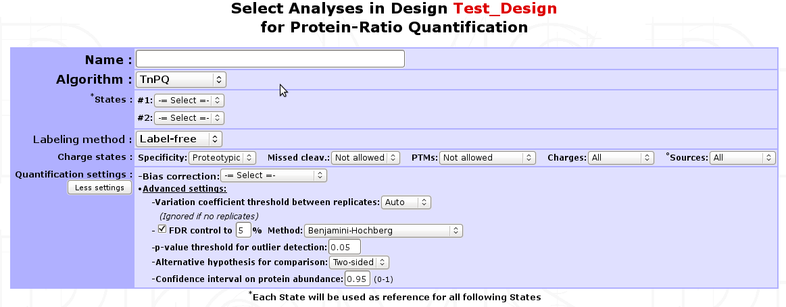
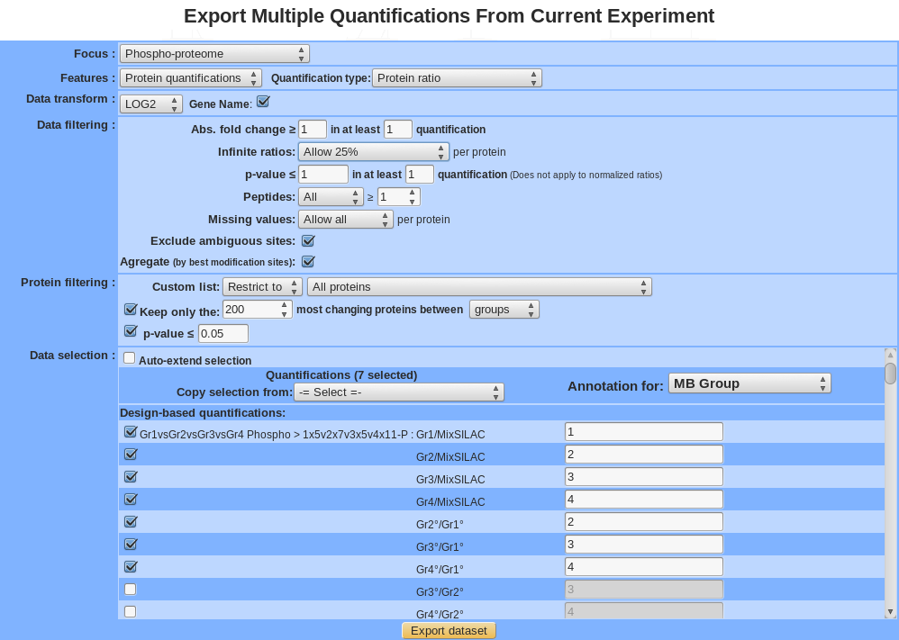
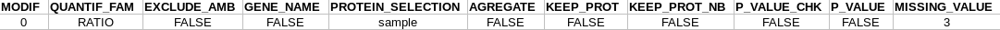
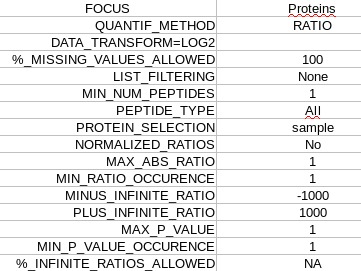
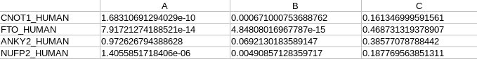
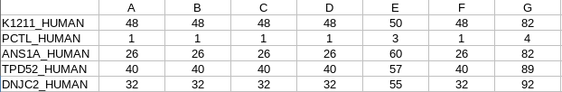
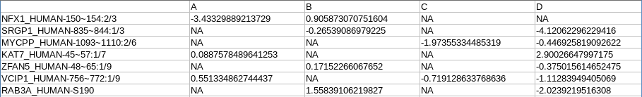
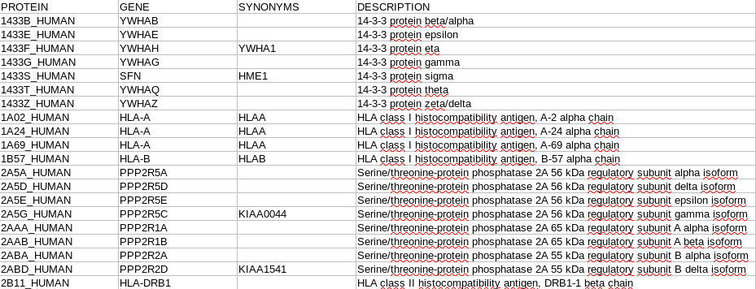
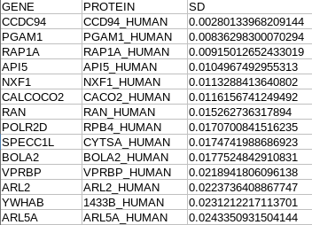

Protein Quantification¶
Absolute abundance quantification¶
emPAI (label-free)¶
The Exponentially Modified Protein Abundance Index (emPAI) is a spectral-count method that estimates the relative quantitation of proteins in a complex mixture[1] based on protein coverage by peptide matches. myProMS uses the built-in implementation of the Mascot server 2.3 software which is a slightly modified version of the original emPAI value (for more details, have a look to mascot help ). As this value is retrieved from Mascot web-server, this label-free method can only be applied to Analyses generated from Mascot DAT files directly imported from a connected Mascot server.
SIn (label-free)¶
The Spectral Index Normalized (SIn) is a normalized label-free quantitative method which combines three abundance features : peptide and spectral count with fragment-ion (MS/MS) intensity[2] . This label-free method is currently available only for Analyses generated from Mascot DAT files. Support for other search results formats is plan in future versions of myProMS.
MaxQuant: Intensity, LFQ, iBAQ¶
Displaying single abundance quantification data¶
Relative abundance quantification¶
Single-Analysis quantification (labeled)¶
If a labeled Analysis has to be quantified, labeling parameters and all peptide XIC data should be readily available in the corresponding search results file. Therefore, a straightforward protein quantification can be performed as follow: Go to the Analysis Quantification options (Process Analyses > Analysis Quantification) and click on Proceed next to the (SILAC/iTRAQ)-based quantification process to display the quantification form shown below.
Name : A name for the quantification.
Labeled states : Select the different conditions to be compared. Available labeled states are identified based on labeling design extracted from the search result file. Each condition defined will be used as a reference for the following one(s). 1 state is usually associated with 1 condition. However, if more than 2 states are identified (e.g. iTRAQ 4/8-plex) an additional option will be displayed for grouping different states as replicates of the same condition. In addition, if more than 2 conditions are defined, all corresponding ratios will be calculated except reverse ratios (cond B/cond A but not cond A/cond B).
Note
It is possible to quantify multiple Analyses at once. Make sure they share identical labeling design. If not, they should be quantified separately.
Multiple filter can be apply on Peptide selection:
- Specificity : Whether to restrict quantification to proteotypic peptides or not.
- Missed cleav. : Include or not miss-cleaved peptides.
- PTMs : Peptides with sequence modification can be allowed, not allowed or extend exclusion to corresponding non-modified peptide.
- Charges : Include all charge states of a peptide set or restrict to set that gives the best signal (set containing peptide with highest XIC value).
- Sources : If the search results files is a merge of multiple LC/MS runs (e.g. Proteome Discoverer), use peptide sets from all runs or use only the one with best signal.
Quantification settings : Additional options are available to control experimental bias, outliers detection and differential analysis.
- Bias correction : Select whether to correct or not for signal bias between label states and which method to apply: If
Scale normalizationis selected, the assumption is made that the total XIC signal between all states should be equal. Alternatively ifReference protein(s)is selected, a pre-recorded List of proteins must be provided. When using this option, it is assumed that a subset of proteins (e.g. House keeping proteins) is unchanged amongst all states and therefore only the sums of the XICs matching these proteins are set equal. In both cases, a state-specific correction factor is computed and applied to each individual peptide XIC. - Avoid infinite ratios : Infinite ratios (log values) can occur when XIC values are missing in 1 of the 2 conditions being compared. When a mixture of normal and infinite peptide ratios exists for the same protein, myProMS must either use the most abundant type of ratios to quantify the protein (e.g. set protein ratio to +/-infinite (log values) if more than 50% of matching peptides have infinite log ratios) or only use the “normal” ratios even if they are less frequent that the infinite ones (to avoid infinite ratios whenever possible). This later option is automatically selected if more than 2 conditions are compared to prevent excessive data exclusion.
- More advanced settings can be used for outlier detection, comparison hypothesis test (Two-sided/Lesser/Greater), FDR control, …
- Bias correction : Select whether to correct or not for signal bias between label states and which method to apply: If
Finally, select the analysi(e)s to be quantified. If multiple peptide quantification datasets are available for an Analysis, one must be selected. Click on the Launch Quantification button. Multiple quantifications will be queued and processed as up to 3 parallel jobs. As described above for Peptide Quantification, a popup window will appear with the list of all jobs launched with their progress status.
Design-based quantifications¶
The use of a design for a quantification is highly recommended, even if it requires only single labeled analysis. It is mandatory to create a design for a quantification that requires more than 1 analysis. Designs are automatically generated when importing protein quantification data from MaxQuant analyses.
Conditions
Observations
Displaying relative abundance quantification data¶
Label-free quantifications¶
Label-free quantifications are methods that allow to determine the relative amount of proteins in two or more biological samples without any use of stable isotope or chemical tag. It is based on precursor signal intensity or the number of spectra made for each peptide of a protein.
Here is a brief description of several methods available in myProMS that you can use from top panel button Process Analyses and then, Analysis Quantification.
TnPQ¶
Silva et al. showed in their work[3] on a Q-ToF type instrument that it is possible to quantify unknown protein samples with a known unified signal response factor in absolute manner . Then, the Top 3 Protein Quantification[4] extended this method to ion trap instruments. The method premises that for each protein identified by a set of peptides, the average of the three most efficiently ionized and therefore highest MS signals directly correlated with the input amount of the corresponding protein. In myProMS, we extended this definition to “all available peptides” for a given protein and called it TnPQ.
Steps involved in TnPQ computation:
Retrieval of all available XICs (area) of each peptide of the protein for all conditions
Removal of incomplete peptide information i.e. peptide with no XIC information in at least one of the replicates of a condition will be removed
Warning
when creating a quantification, avoid to add too many conditions because you will lose a lot of peptide information given the fact that all conditions must provide a XIC for a peptide to be considered more further
If a bias correction setting was selected (scale or reference protein normalization), a normalization step is introduced by computing bias estimates on unique peptides [5] . All XIC are divided by those bias factors.
Note
If None was chosen, nothing is done to the data
Removal of extreme XIC values (outliers) based on the coefficient of variation (standard deviation divided by the mean) of all identified peptides along the replicates in the conditions.
Compute for each protein the geometrical mean of peptide XICs
Quality control of the data (normality test on the data and variance sameness)
Compute the ratio between paired conditions and make a test to assess equality of mean depending on the design made before
- For 2 conditions : use Student t-test comparison (or Welch t-test if variance are not the same)
- For more than 2 conditions : use Tuckey HSD (honestly significant difference) test
If chosen, adjust p-values to control FDR level
Comparing multiple protein quantifications¶
Exporting multiple quantifications¶
For the explanation of all features see section “Exploratory analyses” except for the following item:
Gene Name : transform all protein name in gene name (<which?geneID/unigene>).
Keep most changing proteins between:
- Sample: For a given isoform (or protein), a standard deviation is calculated for all selected sample and only the isoform (or protein) with the best value is kept. The standard deviation is a measure that is used to quantify the amount of variation or dispersion of a set of data values.
- Group: For a given isoform (or protein), an Anova is applied, a p-value is calculated between group. Analysis of variance (ANOVA) is a collection of statistical models and their associated procedures (such as “variation” among and between groups) used to analyze the differences among group.
After clicking on
export datasetbutton, a compressed directory is downloaded which contains following file :R_parameter.txt: all the parameters used by the statistical analysis.
parameter.txt: all the parameters used for data filtering.
matrix_pvalue_processed.txt:
matrix_pep_processed.txt: peptide number
matrix_log2ratio_processed.txt:
annotation_processed.txt:
sd.txt: standard deviation value (between sample)

| [1] | emPAI : Hishima et al, Mol Cell Proteomics, 2005 |
| [2] | SIn : Griffin NM et al, Nat Biotechnol., 2009 |
| [3] | TnPQ : Silva et al, Mol Cell Proteomics, 2006 |
| [4] | T3PQ : Grossmann et al, J Proteomics, 2010 |
| [5] | TnPQ bias correction (scale normalization part) : Yang et al. 2002 |